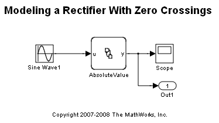
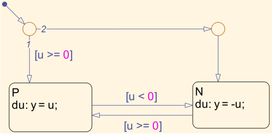
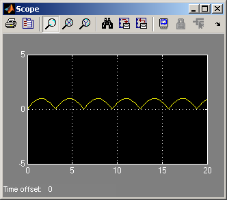

Modeling a Rectifier With Zero Crossings
This is a simple model of a rectifier which takes a single (scalar) input and converts it into its absolute value. This simple model illustrates the zero crossings capability of Stateflow® (a new feature in R2007b).
The chart itself is simple. It has two states namely P (for positive input) and N (for negative input). This can readily seen to be the state machine of a rectifier.
The interesting thing about this model is the behavior of the Stateflow chart in the presence of variable step solvers (such as ode45). In this case, Stateflow registers a change in its state configuration with the Simulink® solver. This enables mode-changes to be recorded very accurately during simulation.
In order to enable this feature, you need to set the "Update Method" property of the Stateflow chart to be "continuous". When this is done, a new option called "Enable zero-crossing detection" is visible. This setting controls whether Stateflow will register a zero crossings signal with Simulink's solver.
The fact that we recorded changes in mode accurately is evident when we plot the time intervals between successive "major time steps". When we do this, we see:

As is clear, the solver records six zero crossings corresponding to the six times when the sine wave changes sign.